Warning: These results are preliminary, do not rely on them until a supporting paper is published.
This results page examines the signal: SeatBotacc_ver.
| SeatBotacc_ver_rms | ||||
|---|---|---|---|---|
| vehicle | baby_age | surface | target_speed | |
| bugaboo | 0 | aula | 5 | 4.784337 |
| klinkers | 5 | 2.646601 | ||
| pave | 5 | 4.443726 | ||
| stoeptegels | 5 | 2.866799 | ||
| tarmac | 5 | 0.677319 | ||
| 9 | aula | 5 | 2.419638 | |
| klinkers | 5 | 2.266409 | ||
| pave | 5 | 2.505239 | ||
| stoeptegels | 5 | 1.712484 | ||
| tarmac | 5 | 0.557920 | ||
| maxicosi | 0 | aula | 5 | 4.585683 |
| klinkers | 5 | 3.212633 | ||
| pave | 5 | 4.614349 | ||
| stoeptegels | 5 | 3.001622 | ||
| tarmac | 5 | 0.870448 | ||
| 9 | aula | 5 | 3.157119 | |
| klinkers | 5 | 3.030913 | ||
| pave | 5 | 4.143432 | ||
| stoeptegels | 5 | 2.563959 | ||
| tarmac | 5 | 0.986256 | ||
| trike | 0 | klinkers | 12 | 7.156535 |
| 20 | 11.059378 | |||
| tarmac | 12 | 1.853090 | ||
| 20 | 2.669363 | |||
| 3 | klinkers | 12 | 6.328730 | |
| 20 | 9.987603 | |||
| tarmac | 12 | 1.371660 | ||
| 20 | 1.823076 | |||
| urbanarrow | 0 | klinkers | 12 | 6.622055 |
| 20 | 9.196784 | |||
| 25 | 11.353710 | |||
| tarmac | 12 | 1.399682 | ||
| 25 | 2.093919 | |||
| 3 | klinkers | 12 | 4.962879 | |
| 20 | 8.587685 | |||
| 25 | 8.962481 | |||
| tarmac | 12 | 1.018156 | ||
| 25 | 1.508039 | |||
| yoyo | 0 | aula | 5 | 4.010035 |
| klinkers | 5 | 2.813259 | ||
| pave | 5 | 4.089450 | ||
| stoeptegels | 5 | 2.655622 | ||
| tarmac | 5 | 0.838265 |
How does vibration vary across speed?
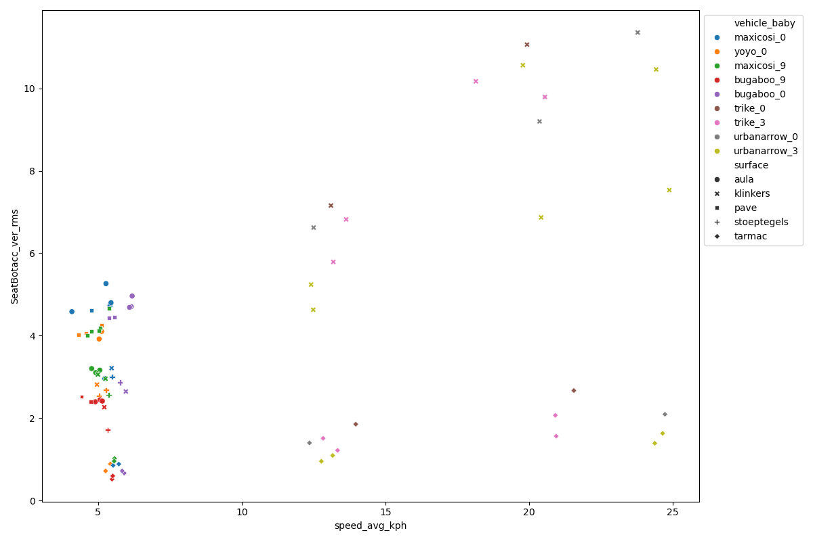
Do vehicles-baby combinations differ in each surface-speed scenario?

Do strollers differ in each surface scenario?

Do cargo bikes differ in each surface scenario?

This section shows how the sessions are segmented into trials.


skipped: session014


skipped: session017


This lists all of the trials in long form data forma (tidy data).
| session | surface | surface_count | vehicle | vehicle_type | baby_age | duration | speed_avg | speed_std | SeatBotacc_ver_rms | duration_weight | target_speed | vehicle_baby | speed_avg_kph | |
|---|---|---|---|---|---|---|---|---|---|---|---|---|---|---|
| 0 | 001 | aula | 0 | maxicosi | stroller | 0 | 21.899048 | 1.503126 | 0.138540 | 4.725627 | 0.267927 | 5 | maxicosi_0 | 5.411255 |
| 1 | 001 | aula | 1 | maxicosi | stroller | 0 | 15.998291 | 1.513355 | 0.092070 | 4.800521 | 0.195734 | 5 | maxicosi_0 | 5.448076 |
| 2 | 001 | aula | 2 | maxicosi | stroller | 0 | 8.998901 | 1.452377 | 0.075462 | 2.960981 | 0.110099 | 5 | maxicosi_0 | 5.228557 |
| 3 | 001 | aula | 3 | maxicosi | stroller | 0 | 11.998169 | 1.464725 | 0.115783 | 5.262790 | 0.146794 | 5 | maxicosi_0 | 5.273011 |
| 4 | 001 | aula | 4 | maxicosi | stroller | 0 | 2.499390 | 1.135202 | 0.130987 | 4.583595 | 0.030579 | 5 | maxicosi_0 | 4.086728 |
| 5 | 002 | aula | 0 | yoyo | stroller | 0 | 25.307007 | 1.422519 | 0.173129 | 4.102564 | 0.309623 | 5 | yoyo_0 | 5.121069 |
| 6 | 002 | aula | 1 | yoyo | stroller | 0 | 26.133178 | 1.398715 | 0.136864 | 3.920431 | 0.319731 | 5 | yoyo_0 | 5.035374 |
| 7 | 003 | klinkers | 0 | yoyo | stroller | 0 | 57.812256 | 1.377886 | 0.077218 | 2.813259 | 0.707313 | 5 | yoyo_0 | 4.960391 |
| 8 | 003 | pave | 0 | yoyo | stroller | 0 | 14.819458 | 1.201146 | 0.098014 | 4.020978 | 0.181311 | 5 | yoyo_0 | 4.324124 |
| 9 | 003 | pave | 1 | yoyo | stroller | 0 | 28.530396 | 1.274300 | 0.152879 | 4.063143 | 0.349060 | 5 | yoyo_0 | 4.587480 |
| 10 | 003 | pave | 2 | yoyo | stroller | 0 | 10.955566 | 1.423047 | 0.070935 | 4.250578 | 0.134038 | 5 | yoyo_0 | 5.122970 |
| 11 | 003 | stoeptegels | 0 | yoyo | stroller | 0 | 53.079346 | 1.464626 | 0.129209 | 2.681725 | 0.649408 | 5 | yoyo_0 | 5.272655 |
| 12 | 003 | stoeptegels | 1 | yoyo | stroller | 0 | 11.830078 | 1.397528 | 0.091097 | 2.538504 | 0.144737 | 5 | yoyo_0 | 5.031102 |
| 13 | 003 | tarmac | 0 | yoyo | stroller | 0 | 25.379516 | 1.507222 | 0.039496 | 0.889350 | 0.310510 | 5 | yoyo_0 | 5.425999 |
| 14 | 003 | tarmac | 1 | yoyo | stroller | 0 | 10.878662 | 1.461152 | 0.042533 | 0.719087 | 0.133097 | 5 | yoyo_0 | 5.260146 |
| 15 | 004 | klinkers | 0 | maxicosi | stroller | 0 | 61.531128 | 1.519470 | 0.079213 | 3.212633 | 0.752813 | 5 | maxicosi_0 | 5.470093 |
| 16 | 004 | pave | 0 | maxicosi | stroller | 0 | 81.734985 | 1.322352 | 0.175815 | 4.614349 | 1.000000 | 5 | maxicosi_0 | 4.760469 |
| 17 | 004 | stoeptegels | 0 | maxicosi | stroller | 0 | 50.957886 | 1.524248 | 0.092289 | 3.001622 | 0.623453 | 5 | maxicosi_0 | 5.487294 |
| 18 | 004 | tarmac | 0 | maxicosi | stroller | 0 | 29.398315 | 1.588932 | 0.034611 | 0.887099 | 0.359678 | 5 | maxicosi_0 | 5.720156 |
| 19 | 004 | tarmac | 1 | maxicosi | stroller | 0 | 29.453247 | 1.534419 | 0.028409 | 0.853828 | 0.360351 | 5 | maxicosi_0 | 5.523907 |
| 20 | 005 | aula | 0 | maxicosi | stroller | 9 | 23.715088 | 1.405082 | 0.079190 | 3.164443 | 0.290146 | 5 | maxicosi_9 | 5.058294 |
| 21 | 005 | aula | 1 | maxicosi | stroller | 9 | 22.328613 | 1.326183 | 0.086295 | 3.202708 | 0.273183 | 5 | maxicosi_9 | 4.774258 |
| 22 | 005 | aula | 2 | maxicosi | stroller | 9 | 22.852661 | 1.365536 | 0.066257 | 3.104974 | 0.279595 | 5 | maxicosi_9 | 4.915929 |
| 23 | 006 | aula | 0 | bugaboo | stroller | 9 | 25.038940 | 1.408314 | 0.092523 | 2.445930 | 0.306343 | 5 | bugaboo_9 | 5.069930 |
| 24 | 006 | aula | 1 | bugaboo | stroller | 9 | 24.318230 | 1.361847 | 0.097907 | 2.397533 | 0.297525 | 5 | bugaboo_9 | 4.902650 |
| 25 | 006 | aula | 2 | bugaboo | stroller | 9 | 22.289060 | 1.429334 | 0.090076 | 2.414220 | 0.272699 | 5 | bugaboo_9 | 5.145601 |
| 26 | 006 | klinkers | 0 | bugaboo | stroller | 9 | 66.939700 | 1.448521 | 0.059999 | 2.266409 | 0.818985 | 5 | bugaboo_9 | 5.214677 |
| 27 | 006 | pave | 0 | bugaboo | stroller | 9 | 71.981320 | 1.229235 | 0.183728 | 2.522680 | 0.880667 | 5 | bugaboo_9 | 4.425245 |
| 28 | 006 | pave | 1 | bugaboo | stroller | 9 | 12.059690 | 1.318594 | 0.092800 | 2.401139 | 0.147546 | 5 | bugaboo_9 | 4.746938 |
| 29 | 006 | stoeptegels | 0 | bugaboo | stroller | 9 | 71.348510 | 1.481844 | 0.105458 | 1.712484 | 0.872925 | 5 | bugaboo_9 | 5.334640 |
| 30 | 006 | tarmac | 0 | bugaboo | stroller | 9 | 34.398190 | 1.523569 | 0.028531 | 0.520522 | 0.420850 | 5 | bugaboo_9 | 5.484849 |
| 31 | 006 | tarmac | 1 | bugaboo | stroller | 9 | 32.078980 | 1.530345 | 0.036844 | 0.598022 | 0.392476 | 5 | bugaboo_9 | 5.509243 |
| 32 | 007 | klinkers | 0 | maxicosi | stroller | 9 | 38.271980 | 1.386783 | 0.088210 | 3.057832 | 0.468245 | 5 | maxicosi_9 | 4.992418 |
| 33 | 007 | klinkers | 1 | maxicosi | stroller | 9 | 13.777950 | 1.459565 | 0.055512 | 2.956137 | 0.168569 | 5 | maxicosi_9 | 5.254434 |
| 34 | 007 | pave | 0 | maxicosi | stroller | 9 | 4.532960 | 1.493070 | 0.112601 | 4.663170 | 0.055459 | 5 | maxicosi_9 | 5.375051 |
| 35 | 007 | pave | 1 | maxicosi | stroller | 9 | 5.154790 | 1.407888 | 0.094993 | 4.185018 | 0.063067 | 5 | maxicosi_9 | 5.068395 |
| 36 | 007 | pave | 2 | maxicosi | stroller | 9 | 18.731690 | 1.398708 | 0.117339 | 4.128079 | 0.229176 | 5 | maxicosi_9 | 5.035348 |
| 37 | 007 | pave | 3 | maxicosi | stroller | 9 | 9.159300 | 1.282471 | 0.109106 | 4.001703 | 0.112061 | 5 | maxicosi_9 | 4.616894 |
| 38 | 007 | pave | 4 | maxicosi | stroller | 9 | 25.436650 | 1.327038 | 0.152789 | 4.104725 | 0.311209 | 5 | maxicosi_9 | 4.777336 |
| 39 | 007 | stoeptegels | 0 | maxicosi | stroller | 9 | 54.777830 | 1.490931 | 0.101845 | 2.563959 | 0.670188 | 5 | maxicosi_9 | 5.367352 |
| 40 | 007 | tarmac | 0 | maxicosi | stroller | 9 | 30.757330 | 1.547778 | 0.048308 | 1.021070 | 0.376306 | 5 | maxicosi_9 | 5.572002 |
| 41 | 007 | tarmac | 1 | maxicosi | stroller | 9 | 36.504270 | 1.544256 | 0.050221 | 0.956923 | 0.446617 | 5 | maxicosi_9 | 5.559322 |
| 42 | 008 | aula | 0 | bugaboo | stroller | 0 | 19.744629 | 1.709386 | 0.090666 | 4.705323 | 0.241569 | 5 | bugaboo_0 | 6.153791 |
| 43 | 008 | aula | 1 | bugaboo | stroller | 0 | 19.918213 | 1.717892 | 0.071697 | 4.962092 | 0.243693 | 5 | bugaboo_0 | 6.184411 |
| 44 | 008 | aula | 2 | bugaboo | stroller | 0 | 20.478516 | 1.692400 | 0.073857 | 4.687629 | 0.250548 | 5 | bugaboo_0 | 6.092641 |
| 45 | 008 | klinkers | 0 | bugaboo | stroller | 0 | 70.465210 | 1.656719 | 0.071998 | 2.646601 | 0.862118 | 5 | bugaboo_0 | 5.964188 |
| 46 | 008 | pave | 0 | bugaboo | stroller | 0 | 41.327271 | 1.493342 | 0.126256 | 4.436193 | 0.505625 | 5 | bugaboo_0 | 5.376031 |
| 47 | 008 | pave | 1 | bugaboo | stroller | 0 | 38.321411 | 1.544742 | 0.172874 | 4.451850 | 0.468850 | 5 | bugaboo_0 | 5.561073 |
| 48 | 008 | stoeptegels | 0 | bugaboo | stroller | 0 | 51.631348 | 1.600410 | 0.153635 | 2.866799 | 0.631692 | 5 | bugaboo_0 | 5.761476 |
| 49 | 008 | tarmac | 0 | bugaboo | stroller | 0 | 39.953979 | 1.641238 | 0.039428 | 0.666750 | 0.488823 | 5 | bugaboo_0 | 5.908458 |
| 50 | 008 | tarmac | 1 | bugaboo | stroller | 0 | 9.872314 | 1.621205 | 0.030193 | 0.720094 | 0.120784 | 5 | bugaboo_0 | 5.836338 |
| 51 | 015 | tarmac | 0 | trike | bicycle | 0 | 73.656647 | 3.879902 | 0.156000 | 1.853090 | 0.901164 | 12 | trike_0 | 13.967648 |
| 52 | 015 | tarmac | 1 | trike | bicycle | 0 | 58.430481 | 5.988762 | 0.141759 | 2.669363 | 0.714877 | 20 | trike_0 | 21.559544 |
| 53 | 016 | klinkers | 0 | trike | bicycle | 0 | 47.556396 | 3.639994 | 0.261474 | 7.156535 | 0.581836 | 12 | trike_0 | 13.103979 |
| 54 | 016 | klinkers | 1 | trike | bicycle | 0 | 35.296143 | 5.535931 | 0.416609 | 11.059378 | 0.431836 | 20 | trike_0 | 19.929352 |
| 55 | 018 | klinkers | 0 | trike | bicycle | 3 | 52.572601 | 3.662989 | 0.252919 | 5.788357 | 0.643208 | 12 | trike_3 | 13.186760 |
| 56 | 018 | klinkers | 1 | trike | bicycle | 3 | 46.003021 | 5.041590 | 0.663513 | 10.170496 | 0.562831 | 20 | trike_3 | 18.149723 |
| 57 | 018 | tarmac | 0 | trike | bicycle | 3 | 50.771942 | 3.704591 | 0.064066 | 1.218999 | 0.621178 | 12 | trike_3 | 13.336528 |
| 58 | 018 | tarmac | 1 | trike | bicycle | 3 | 45.240356 | 5.817980 | 0.173428 | 1.564421 | 0.553501 | 20 | trike_3 | 20.944728 |
| 59 | 019 | klinkers | 0 | urbanarrow | bicycle | 0 | 62.312805 | 3.472637 | 0.326903 | 6.622055 | 0.762376 | 12 | urbanarrow_0 | 12.501494 |
| 60 | 019 | klinkers | 1 | urbanarrow | bicycle | 0 | 38.274109 | 6.606343 | 0.806257 | 11.353710 | 0.468271 | 25 | urbanarrow_0 | 23.782836 |
| 61 | 019 | tarmac | 0 | urbanarrow | bicycle | 0 | 58.100098 | 3.432181 | 0.193050 | 1.399682 | 0.710835 | 12 | urbanarrow_0 | 12.355853 |
| 62 | 019 | tarmac | 1 | urbanarrow | bicycle | 0 | 43.061951 | 6.869750 | 0.345175 | 2.093919 | 0.526848 | 25 | urbanarrow_0 | 24.731101 |
| 63 | 020 | klinkers | 0 | urbanarrow | bicycle | 3 | 58.230835 | 3.447948 | 0.144791 | 5.240209 | 0.712435 | 12 | urbanarrow_3 | 12.412614 |
| 64 | 020 | klinkers | 1 | urbanarrow | bicycle | 3 | 32.094879 | 5.496136 | 0.301501 | 10.560096 | 0.392670 | 20 | urbanarrow_3 | 19.786089 |
| 65 | 020 | klinkers | 2 | urbanarrow | bicycle | 3 | 30.325470 | 6.784766 | 0.234419 | 10.457142 | 0.371022 | 25 | urbanarrow_3 | 24.425157 |
| 66 | 020 | tarmac | 0 | urbanarrow | bicycle | 3 | 50.699707 | 3.656444 | 0.155977 | 1.094809 | 0.620294 | 12 | urbanarrow_3 | 13.163197 |
| 67 | 020 | tarmac | 1 | urbanarrow | bicycle | 3 | 43.243805 | 6.847537 | 0.114941 | 1.631729 | 0.529073 | 25 | urbanarrow_3 | 24.651132 |
| 68 | 021 | klinkers | 0 | urbanarrow | bicycle | 0 | 39.051971 | 5.657211 | 0.251812 | 9.196784 | 0.477788 | 20 | urbanarrow_0 | 20.365958 |
| 69 | 022 | tarmac | 0 | urbanarrow | bicycle | 3 | 61.182647 | 3.547715 | 0.100799 | 0.954637 | 0.748549 | 12 | urbanarrow_3 | 12.771774 |
| 70 | 022 | tarmac | 1 | urbanarrow | bicycle | 3 | 45.921722 | 6.771563 | 0.184118 | 1.391562 | 0.561837 | 25 | urbanarrow_3 | 24.377626 |
| 71 | 023 | klinkers | 0 | urbanarrow | bicycle | 3 | 48.258820 | 3.469040 | 0.157262 | 4.628242 | 0.590430 | 12 | urbanarrow_3 | 12.488543 |
| 72 | 023 | klinkers | 1 | urbanarrow | bicycle | 3 | 36.816223 | 5.672535 | 0.144120 | 6.868217 | 0.450434 | 20 | urbanarrow_3 | 20.421126 |
| 73 | 023 | klinkers | 2 | urbanarrow | bicycle | 3 | 31.691162 | 6.911451 | 0.181237 | 7.532230 | 0.387731 | 25 | urbanarrow_3 | 24.881225 |
| 74 | 024 | klinkers | 0 | trike | bicycle | 3 | 57.803467 | 3.787090 | 0.267992 | 6.820204 | 0.707206 | 12 | trike_3 | 13.633524 |
| 75 | 024 | klinkers | 1 | trike | bicycle | 3 | 42.795044 | 5.709317 | 0.408642 | 9.790999 | 0.523583 | 20 | trike_3 | 20.553541 |
| 76 | 024 | tarmac | 0 | trike | bicycle | 3 | 55.590698 | 3.564691 | 0.135802 | 1.511087 | 0.680133 | 12 | trike_3 | 12.832889 |
| 77 | 024 | tarmac | 1 | trike | bicycle | 3 | 47.592590 | 5.810082 | 0.215123 | 2.068946 | 0.582279 | 20 | trike_3 | 20.916296 |
Plots of the filter weights versus frequency we apply to the data.


skipped: session014


skipped: session017


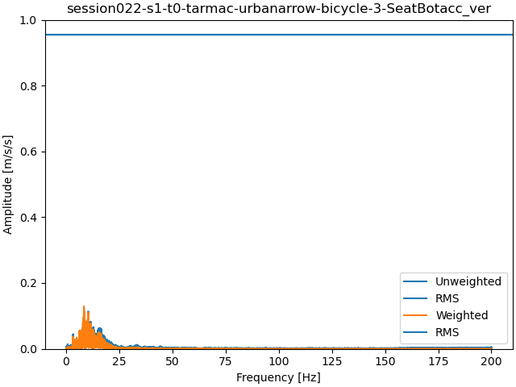
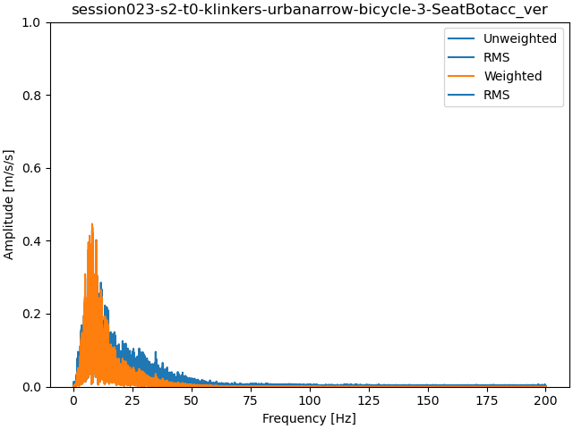
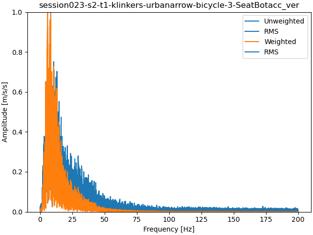
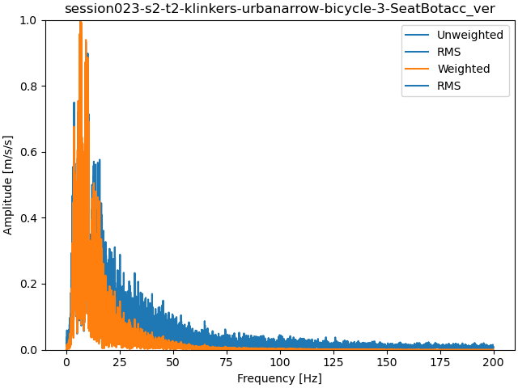
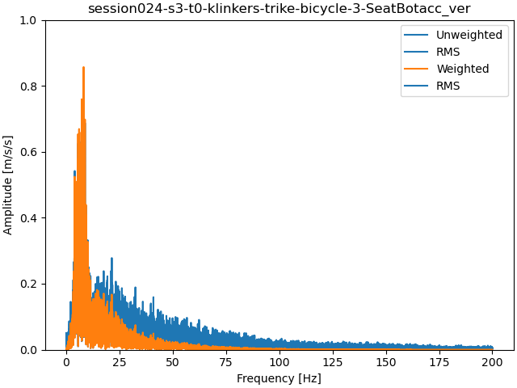
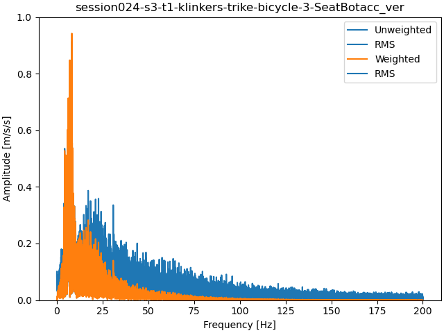
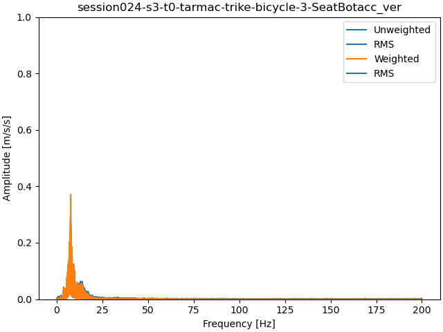
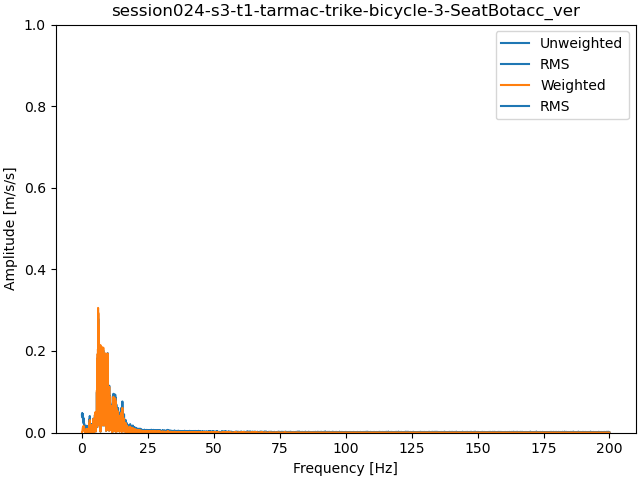
These plots give the information necessary to determine if the sensor orientations are working correctly. These are time histories of the "static" event (no motion) in each session. The left column shows the raw accelerometer data for each sensor and each body fixed sensor axis. If the background is shaded grey, that axis is the sensor's axis that aligned with the vehicle's lateral axis (pitch axis) and the title on that subplot gives the axis letter (x, y, or z) and the sign (axis points to the left - or right +). The column on the right shows the accelerometer time histories projected on the vehicle's body fixed axes: longitudinal, lateral, and vertical. The vertical axis should show a positive ~10 m/s/s value and the other two should axes should show approximately 0 m/s/s if the rotations are applied correctly. This indicates that the vertical axes has been aligned with gravity.


skipped: session014


skipped: session017


skipped: session014


skipped: session017


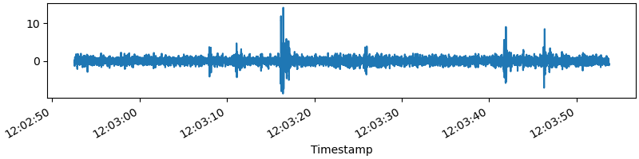
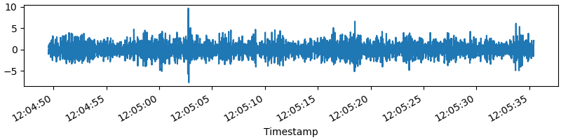
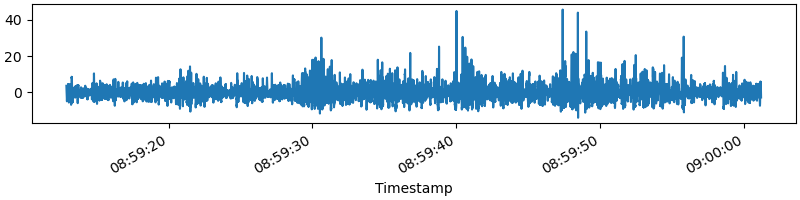
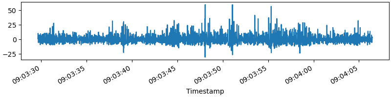
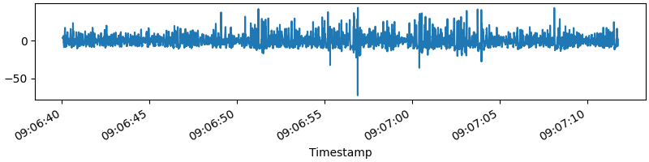
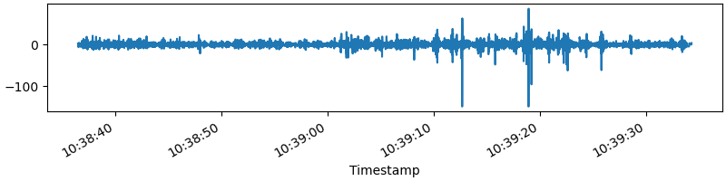
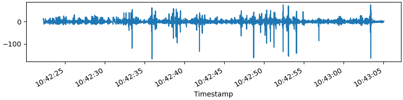
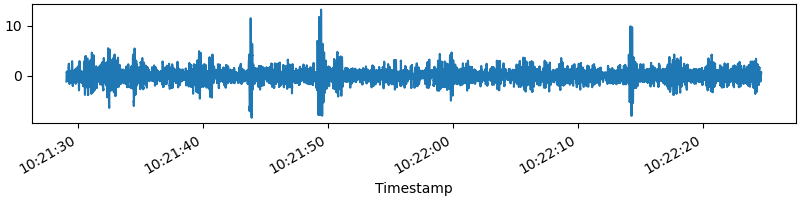
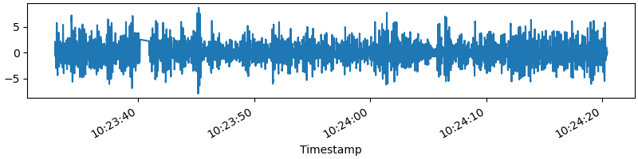